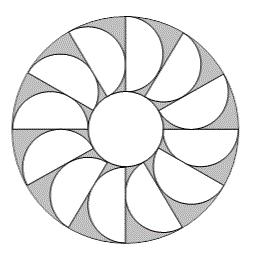

Puzzles
If you don't like solving puzzles, then you probably don't like maths much either, because the two are basically the same thing.
Puzzles come in all shapes and sizes and levels of difficulty and there are whole websites full of them. To see some of these, please go to the Websites page.
Here are a few puzzles aimed at different age groups and levels of difficulty. Try some of them out, and you will experience the thrill of finding that you can both understand more than you think you can, and that you are able to make connections using the understanding you currently have.
It is a good idea to look back over a successful puzzle solution and remind yourself how you did it.
Finally, don't be too quick to look at the hints and solutions. Give your self the time and space to find the solution yourself: it ismuch more fun that way.
Here are some simple puzzles aimed at year 6, 7 & 8
1. Two farmers are taking their cows to market. On the way, one says to the other, "If you give me one of your cows, we would have the same number of cows." The other farmer replies, "True, but if you give me one of your cows, I will have twice as m any as you.". How many cows did the two farmers each have?
Click here for a hint:
Think about how far apart the numbers must be. Also, do you think the numbers are odd or even?
Click here for the solution:
One of the farmers has 5 cows and the other has 7 cows.
Click here for the explanation:
If farmer 1 gives one cow to farmer 2 who then has twice as many as farmer 1, farmer 2 must have an even number of cows after the exchange, so he has an odd number before the exchange. If farmer 2 gives a cow to farmer 1 and they have the same number, then the number of cows each has must be 2 apart. It is reasonably obvious (at least, I think it is obvious) that the numbers must be fairly small, so try odd numbers which are 2 apart to see if they work.
2. A boy has twice as much money as his friend. If they have 84p together, how much does each have?
Click here for a hint:
Simplify the problem, like this: if one boy has 1p then the friend has 2p. That's 3p altogether.
Click here for the solution:
They have 28p and 56p.
Click here for the explanation:
If one boy has twice as much as his friend, this can be thought of as being 3portions. If 3 portions amount to 84p then one portion will be 28p (84 ÷ 3). So one friend has 28p and the other must have 56p (28 × 2).
3. Along a certain street the lights are placed 30m apart. If there are 10 lights, how far is it from the first to the last?
Click here for a hint:
How many gaps are there between 10 lamp posts?
Click here for the solution:
270m.
Click here for the explanation:
Between 2 lamp post, there is one gap, so between 10 lamp posts, there are 9 gaps.9 × 30 = 270.
4. 2 ice-creams are eaten by 2 children in 2 minutes. How long will it take 5 children to eat 5 ice-creams?
Click here for a hint:
How long does it take for a child to eat an ice-cream (according to this puzzle)?
Click here for the solution:
2 minutes
Click here for the explanation:
If it take 2 minutes for the 2 children to eat their ice-creams, then it takes one of our children 2 minutes to eat their ice-cream. So it will still take 2 minutes if one million children and eating one million ice-creams.
5. An electric train is travelling due north. If the wind is blowing from the north west, in which direction is the smoke blowing?
Click here for a hint:
Read the question! Now read the question again! Now read the question really carefully!
Click here for the solution:
There is no smoke. It is an electric train.
Click here for the explanation:
This rather silly little puzzle shows how important it is to read problems very carefully indeed and not just to skim read the text.
Many thanks to David Feather (one of my lecturers at Bristol Poly back in the early 80s) for these and many other puzzles which I have been using since 1981.
Here are a few geometric problems for years 9, 10 & 11.
These problems come from UK Maths Challenge papers.
6. A window frame in Salt's Mill, just outside Bradford in Yorkshire, consists of two equal semi-circles and a circle inside a large semi-circle with each touching the other three as shown. The width of the frame is 4m.
What is the radius of the circle in metres?
Click here for a hint:
1. What lengths do you know?
2. Give variable names (letters) to lengths you don't know.
3. Remember Pythagoras' Theorem.
Click here for the solution:
Click here for the explanation:
7. The diagram shows an annulus, which is the region between two circles with the same centre. Twelve equal touching semi-circles are placed inside the annulus. The diameters of the semi-circles lie along the diameters of the outer circle.
What fraction of the annulus is shaded?
Click here for a hint:
1. Can you identify the angle between each of the semi-circles?
2. Try to find the radii of the various circles and semi-circles.
Click here for the solution:
One quarter
Click here for the explanation:
...and finally, a really tough one!
8. Three squares are drawn on the outside of a right angled triangle, whose shorter sides have lengths a and 2a. The whole figure is surrounded by a rectangle, as shown.
What is the ratio of the area of the shaded region to the area of the outer rectangle?
Click here for a hint:
1. What are the areas of the shaded shapes?
2. Can you work out the length and width of the large rectangle?
Click here for the solution:
5 : 9
Click here for the explanation: